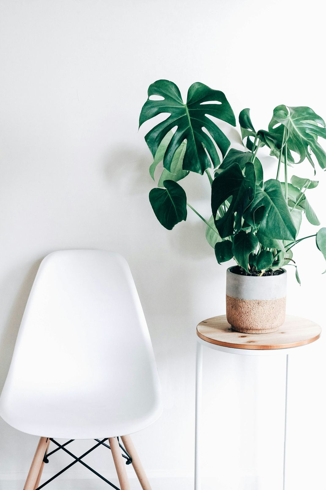
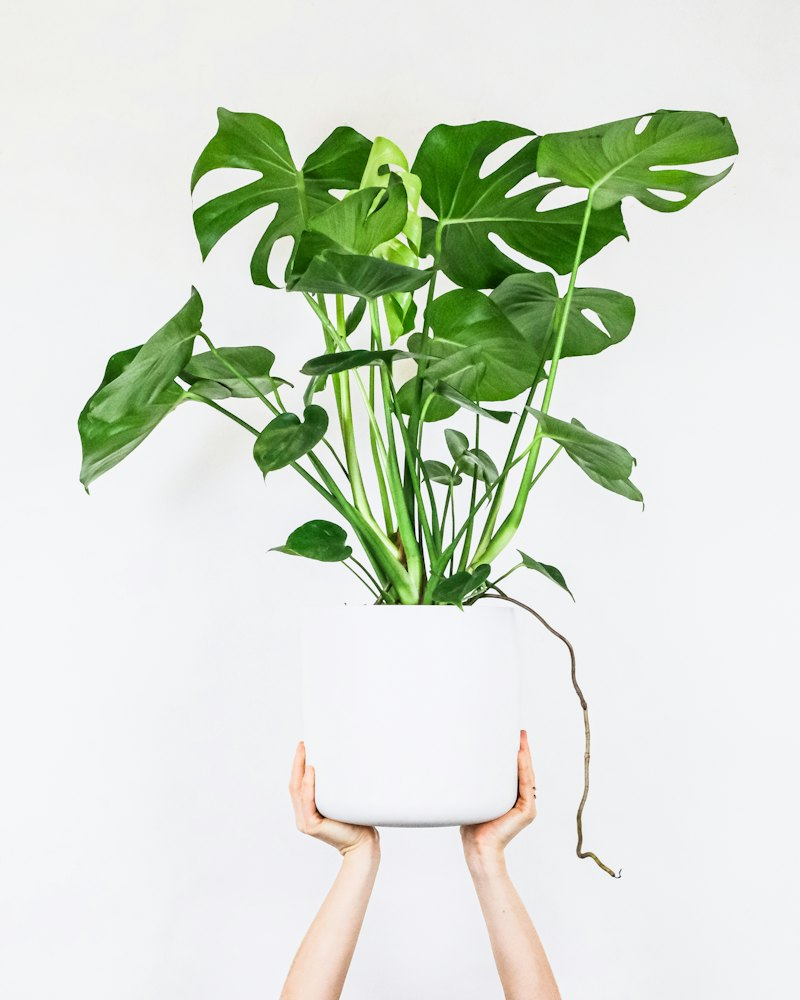
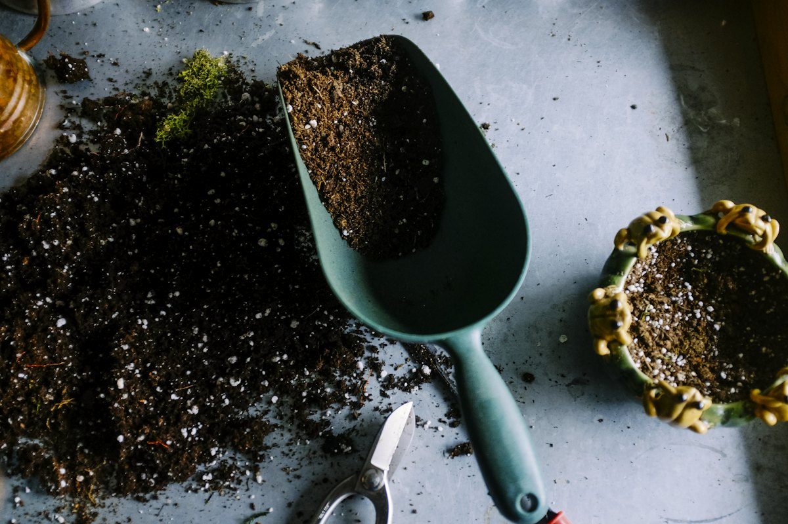
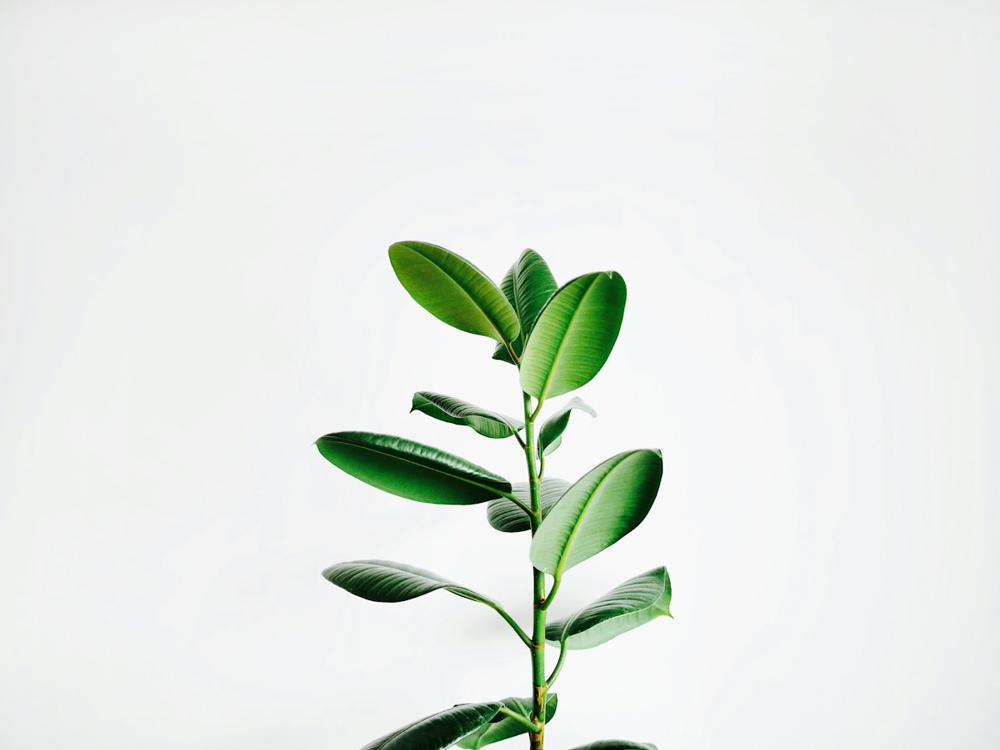

Llena tu casa de vida, sin salir de ella.
Plantas de interior sanas, en maceta lista y con guía de cuidados personalizada. Las llevamos hasta tu puerta.
+3.200 plantas entregadas felices
★★★★★ 4,9 de valoración


Monstera deliciosa · $19.990
Envío en 48 horas
Gratis sobre $25.000
Garantía de 30 días
Si no prospera, la cambiamos
Guía de cuidados
Recordatorios de riego por QR
Caja compostable
Cero plástico en el envío
Elige tu planta
Filtra según la luz de tu espacio o tu experiencia. Todas llegan en maceta y listas para lucirse.
Simple, como debería ser.
De nuestro vivero a tu living en tres pasos, y te acompañamos después de la entrega.

Elige
Escoge tu planta según la luz de tu espacio y tu nivel de experiencia.
Recibe
Llega trasplantada, regada y protegida en una caja 100% compostable.
Cuida
Escanea el QR de su etiqueta y recibe recordatorios de riego y abono.

Un regalo que sigue creciendo.
- Planta a elección
- Maceta de cerámica artesanal
- Tarjeta escrita a mano
- Envoltorio de papel semilla
¿Cuánta luz tiene tu casa?
Antes de elegir, mira tu ventana a las cuatro de la tarde. Con eso ya sabes qué planta te conviene.
Pieza al interior o pasillo
Se ve claro para leer, pero el sol directo nunca entra. Aguantan bien el pothos y la sansevieria; riégalas cada dos semanas.
Para quien viaja seguido.
Cerca de una ventana con cortina
Entra luz todo el día, pero sin rayos directos. Es el lugar de la monstera y la calathea, que aman la humedad: riego semanal.
La opción más fácil de acertar.
Ventana al norte o balcón
Recibe al menos cuatro horas de sol. Aquí van los cactus y las suculentas, con riego cada diez a quince días, y solo cuando la tierra esté seca.
Para quien se olvida de regar.
Mi planta se ve mal. ¿Qué le pasa?
Casi siempre es riego, luz o maceta. Toca lo que ves y te decimos por dónde partir.

¿Cada cuánto la riego?
El error número uno es el exceso de agua. Elige tu planta y la estación y te damos una frecuencia para partir; después afínala metiendo un dedo en la tierra.
Preguntas frecuentes
¿Cómo llegan las plantas?
En caja compostable con soporte de cartón que fija la maceta. La planta va regada y con la tierra cubierta para que no se derrame.
¿Qué pasa si mi planta no prospera?
Tienes 30 días de garantía. Escríbenos con una foto y te ayudamos a recuperarla o te la cambiamos sin costo.
¿A qué comunas despachan?
A todas las comunas de la Región Metropolitana. El despacho es gratis sobre $25.000 y llega en 48 horas hábiles.
¿Con qué frecuencia debo regar?
Depende de la planta y de la luz que reciba; en la etiqueta con QR va el calendario de cada una. Como regla general: mete un dedo en la tierra y, si sale seco a dos centímetros, es hora de regar.
¿Puedo cambiar la maceta?
Sí. Te recomendamos esperar unas semanas a que se adapte a su nuevo lugar y recién entonces trasplantarla a una maceta un poco más grande, con buen drenaje.
¿Cuáles son seguras para gatos y perros?
Usa el filtro “Aptas para mascotas”: el pothos y la sansevieria no lo son, pero la calathea sí es segura.